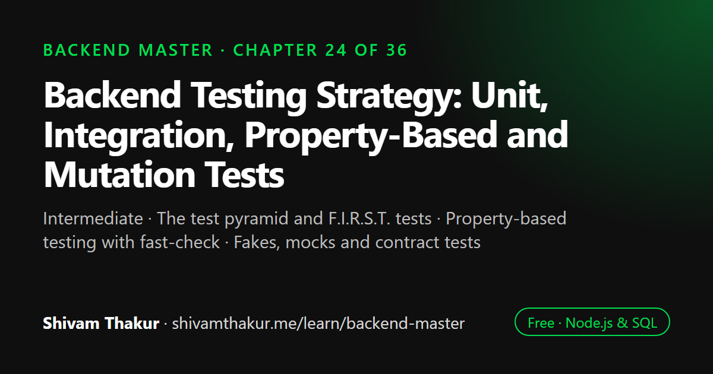

Chapter 24 of 36 · Intermediate
Backend Testing Strategy: Unit, Integration, Property-Based and Mutation Tests
Testing Strategy — Proving Your Backend Works (and Keeps Working)

More tests and higher coverage do not guarantee a safe backend. This chapter builds a 25-test suite with the built-in node:test runner and a real PostgreSQL, shows a property test finding a negative order total, a mock hiding a broken SQL update, a flaky timing test, 99.6 percent coverage with surviving mutants, and a load test.
In this chapter you will learn
- The test pyramid and F.I.R.S.T. tests
- Property-based testing with fast-check
- Fakes, mocks and contract tests
- Isolating database tests
- Fake timers, flaky tests and mutation testing
24.0 Why This Chapter Matters
In Chapters 21–23 you attacked your own code by hand: forged a JWT, read someone else's order, froze a server with a regex. Those were experiments. If nothing records them, the next refactor quietly reintroduces the bug and nobody notices until a customer does.
Tests are executable memory. A good test suite lets you change code with confidence, catches regressions in seconds instead of in production, documents what the system is supposed to do, and makes refactors safe. A bad suite does the opposite: it's slow, flaky, tests implementation details so every refactor breaks it, and gives false confidence.
The surprising lesson of this chapter, shown with measurements rather than slogans, is that more tests and higher coverage do not mean a better suite:
- A test suite with 100% line coverage let three mutated (broken) versions of our pricing code through. We'll show you how to find out.
- A mocked unit test happily passed while the real SQL was subtracting stock in the wrong direction.
- A test that is correct on your laptop failed 4 out of 20 times with nothing changed.
- A property-based test found a pricing bug (a negative order total) that five hand-written examples missed.
You'll build a real test suite for ShopLine's order flow with Node's built-in test runner and see all of this happen.
24.1 What Tests Are For
A test answers one question: "If this behaviour broke, would I find out before my users do?"
| Purpose | Example |
|---|---|
| Catch regressions | The negative-total bug can never return |
| Specify behaviour | "Free shipping starts at exactly ₹500.00" is written down, executably |
| Enable refactoring | Swap Knex for Kysely (Ch 17) and the contract tests still pass |
| Design feedback | A function that's painful to test is usually badly designed (hidden dependencies, too many responsibilities, Ch 11) |
| Living documentation | Tests show how the API is meant to be called |
What tests can't do: prove the absence of bugs. They show behaviour for the inputs you tried. Everything in this chapter is about choosing which inputs and which kind of test give the most confidence per minute of runtime and per hour of maintenance.
24.2 The Test Pyramid (and Its Cousins)
▲ few, slow, brittle, expensive
╱ ╲ END-TO-END: real browser/clients, whole deployed system
╱───╲
╱ ╲ INTEGRATION / API: real DB, real HTTP, several modules together
╱───────╲
╱ ╲ UNIT: one function/class, no I/O, runs in microseconds
╱───────────╲
▼ many, fast, precise, cheap| Level | Real dependencies? | Speed | Finds | Misses |
|---|---|---|---|---|
| Unit | None (fakes/mocks) | µs–ms | Logic bugs, edge cases, boundary errors | Wiring, SQL, config, integration bugs |
| Integration | Real DB, cache, HTTP | 10–500 ms | SQL bugs, transactions, serialisation, constraints | UI/browser behaviour |
| End-to-end | The whole system | seconds | Whole-journey breakage, deployment config | Pinpointing the cause |
Many modern backend teams prefer a "testing trophy" shape: a solid base of static checks (types, lint), fewer isolated unit tests, and most value from integration tests that use the real database, because most backend bugs (SQL, transactions, constraints) live at that boundary. The honest lesson of our experiments below is the same: unit tests are essential for logic; integration tests are essential for truth. You need both, in proportions that fit your system.
The FIRST properties of a good test
Fast · Independent (no test depends on another's leftovers, any order works) · Repeatable (same result every run, on any machine) · Self-validating (pass/fail, no human reading logs) · Timely (written with the code, not months later).
24.3 Setup: Node's Built-In Test Runner
Since Node 18/20 you can test with zero dependencies:
import { test, describe } from 'node:test';
import assert from 'node:assert/strict';
describe('orderTotal', () => {
test('free shipping exactly at the threshold', () => {
assert.deepEqual(orderTotal({ items: [{ qty: 1, unitPriceMinor: 50000 }] }),
{ subtotal: 50000, discount: 0, shipping: 0, total: 50000 });
});
});node --test # discovers and runs all tests
node --test --experimental-test-coverage # + coverage
node --test --test-reporter=spec # readable output
node --test --watch # re-run on changeBuilt in: describe/test/it, hooks (before/after/beforeEach/afterEach), mock.fn(), mock.timers, snapshot and coverage support, parallel files, and TAP/spec reporters. Vitest (fast, Jest-compatible, great watch mode and TypeScript) and Jest (the long-time default) are popular alternatives with richer ecosystems (not run here; the concepts below transfer directly).
A real gotcha we hit
node --test runs every .js file inside a directory named test, not only *.test.js. My first version kept a helpers.js in test/; the runner executed it as a test and reported a phantom test (✔ test\helpers.js). Fix: keep non-test code in a different folder (support/).
The project
src/pricing.js pure logic: orderTotal(items, coupon, shipping)
src/order.service.js business rules; takes a unit of work (uow), clock, newId (Ch 11)
src/repos.memory.js in-memory fakes (fast)
src/repos.pg.js PostgreSQL repositories + unit of work (Ch 16)
src/app.js Express routes
test/*.test.js the tests
support/helpers.js schema-per-test-file setup, seed dataInjecting the clock and id generator into the service (instead of calling new Date()/randomUUID() inside) is what makes the service deterministic to test, the "depend on abstractions" rule from Chapter 11 paying off.
24.4 Unit Tests: Logic, Boundaries, Examples
Table-driven tests keep many cases readable:
const cases = [
['no coupon, below free-shipping threshold', { items: [{ qty: 2, unitPriceMinor: 8000 }] }, { subtotal: 16000, discount: 0, shipping: 4000, total: 20000 }],
['10% coupon rounds to nearest minor unit', { items: [{ qty: 1, unitPriceMinor: 1999 }], coupon: { type: 'percent', value: 10 } }, { subtotal: 1999, discount: 200, shipping: 4000, total: 5799 }],
['free shipping exactly at the threshold (boundary)', { items: [{ qty: 1, unitPriceMinor: 50000 }] }, { subtotal: 50000, discount: 0, shipping: 0, total: 50000 }],
['one minor unit below the threshold', { items: [{ qty: 1, unitPriceMinor: 49999 }] }, { subtotal: 49999, discount: 0, shipping: 4000, total: 53999 }],
];
for (const [name, input, expected] of cases) test(name, () => assert.deepEqual(orderTotal(input), expected));Boundary values are where bugs live: the cases for exactly 50000 and 49999 catch >= vs >. Whenever there's a threshold, test at it, just below, and just above. Also test empty, one, many; zero; negative where allowed; the maximum.
Test structure: Arrange–Act–Assert
test('out of stock -> DomainError and no order stored', async () => {
const { svc, orders } = build(); // Arrange
await assert.rejects(svc.create({ userId: 1, items: [{ productId: 3, qty: 2 }] }), { code: 'OUT_OF_STOCK' }); // Act + assert the error
assert.equal((await orders.all()).length, 0); // Assert the side effect (nothing stored)
});One behaviour per test; a name that reads like a sentence ("rejects an empty order"); assert on observable behaviour (return values, stored state, errors), not on private internals.
A gotcha: synchronous throw vs rejected promise
My service's create was a plain function that threw EMPTY_ORDER synchronously, before returning a promise. The test assert.rejects(svc.create(...)) failed because there was no promise to reject, and the HTTP handler's await would have worked by luck. The fix was one word: async create(...), so every failure is a rejected promise. (Express 5 forwards rejected promises from async handlers to the error middleware; a sync throw inside a non-async callback chain may not follow the same path.) Make async functions always async.
24.5 Property-Based Testing: Let the Computer Find the Edge Cases
Example-based tests check inputs you thought of. Property-based testing (fast-check) states rules that must always hold and generates hundreds of random inputs to try to break them.
const item = fc.record({ qty: fc.integer({ min: 1, max: 20 }), unitPriceMinor: fc.integer({ min: 0, max: 200000 }) });
const coupon = fc.option(fc.oneof(
fc.record({ type: fc.constant('percent'), value: fc.integer({ min: 0, max: 100 }) }),
fc.record({ type: fc.constant('fixed'), value: fc.integer({ min: 0, max: 500000 }) })), { nil: null });
const order = fc.record({ items: fc.array(item, { minLength: 1, maxLength: 6 }), coupon });
test('the total is never negative', () => fc.assert(fc.property(order, (o) => orderTotal(o).total >= 0)));
test('the discount never exceeds the subtotal', () => fc.assert(fc.property(order, (o) => orderTotal(o).discount <= orderTotal(o).subtotal)));
test('every amount is an integer (no float money)',() => fc.assert(fc.property(order, (o) => Object.values(orderTotal(o)).every(Number.isInteger))));My first draft of orderTotal let a fixed coupon exceed the subtotal. All five hand-written examples passed. The property tests failed immediately, and fast-check shrank the failing input to the smallest possible counterexample:
✔ no coupon, below free-shipping threshold
✔ 10% coupon rounds to nearest minor unit
✔ fixed coupon
✔ free shipping exactly at the threshold (boundary)
✔ one minor unit below the threshold
✖ the total is never negative
Property failed after 56 tests
Counterexample: [{"items":[{"qty":1,"unitPriceMinor":0}],"coupon":{"type":"fixed","value":4001}}]
✖ the discount never exceeds the subtotal
✔ every amount is an integer (no floating-point money)The counterexample: a ₹0.00 item with a ₹40.01 coupon: 0 − 4001 + 4000 = −1, a negative order total. In production that is a refund the customer didn't pay for. The fix (one line) and the green run:
if (coupon?.type === 'fixed') discount = Math.min(coupon.value, subtotal); // a coupon can never make goods cost < 0✔ the total is never negative · ✔ the discount never exceeds the subtotal · ✔ every amount is an integer tests 8, pass 8Where properties shine: money and arithmetic, parsers/serialisers (parse(format(x)) === x), sorting/pagination (no item lost or duplicated), idempotent operations (f(f(x)) === f(x)), state machines, and "never crashes on any input" fuzzing. fast-check prints the seed of a failure so you can replay it.
24.6 Test Doubles: Fakes, Stubs, Spies, Mocks
| Double | What it is | Example |
|---|---|---|
| Dummy | A placeholder never used | null passed where an argument is required |
| Stub | Returns canned answers | findById: async () => ({ id: 1 }) |
| Fake | A working lightweight implementation | memoryProducts (a Map) |
| Spy | Records how it was called | mock.fn() then inspect calls |
| Mock | A spy with expectations about interactions | "must call decrementStock(1, 2) once" |
Our service has two kinds of unit test. With an in-memory fake, the test checks outcomes (order stored, stock reduced, totals right). With a mock, it checks interactions:
const products = { decrementStock: mock.fn(async () => ({ id: 1, priceMinor: 12000 })) };
const orders = { create: mock.fn(async (o) => o) };
// … run the service …
assert.deepEqual(products.decrementStock.mock.calls[0].arguments, [1, 2]);The danger of over-mocking, demonstrated
I planted a one-character bug in the real PostgreSQL repository: stock = stock + $2 instead of stock - $2. Then I ran the suite:
✔ order service with in-memory fakes ... 3 tests
✔ the same service with a MOCK repository ← interaction test passes
✔ products repo contract: in-memory fake ← the fake is correct
✖ products repo contract: PostgreSQL (real DB)
✖ decrementStock returns the price and reduces stock actual: 7, expected: 3
✖ can take exactly the remaining stock (boundary) actual: 2, expected: 0Every test that used a fake or mock passed, because they were testing a model of the database, not the database. Only the tests that ran the real SQL found the bug. (Note that "refuses to go below zero" still passed with the bug: a test can pass for the wrong reason, one more reason to have several tests per behaviour.)
Guidelines:
- Mock only what you don't own or can't run cheaply: third-party HTTP APIs, payment gateways, email. Never mock your own database layer for tests that claim to test the data layer.
- Prefer fakes to mocks when a faithful fake exists, and prove the fake is faithful with a contract test (next section).
- Mocks that assert exact call sequences couple the test to the implementation: refactor the internals and the test breaks though behaviour is unchanged. Assert outcomes where possible.
- Never mock the thing under test, or value objects like
Date/Math(inject a clock or use fake timers instead).
24.7 Integration Tests With a Real Database
The contract test: one suite, every implementation
function productRepoContract(label, setup) {
describe(`products repo contract: ${label}`, () => {
let repo, teardown;
beforeEach(async () => { ({ repo, teardown } = await setup()); });
afterEach(async () => { await teardown(); });
test('decrementStock returns the price and reduces stock', async () => { /* … */ });
test('refuses to go below zero and leaves stock untouched', async () => { /* … */ });
test('can take exactly the remaining stock (boundary)', async () => { /* … */ });
test('unknown product -> null', async () => { /* … */ });
});
}
productRepoContract('in-memory fake', async () => ({ repo: memoryProducts(SEED), teardown: async () => {} }));
productRepoContract('PostgreSQL (real database, transaction rolled back after each test)', async () => {
const c = await db.begin(); await seedPg(c);
return { repo: pgProducts(c), teardown: () => db.rollback(c) };
});The same four tests run against the in-memory fake and the real database. If the fake ever disagrees with PostgreSQL, a contract test fails, so unit tests built on the fake stay trustworthy. (This is Chapter 11's repository interface paying a second dividend.) Result: 4 + 4 tests, the real-DB group in about 120 ms.
Test isolation: three techniques
| Technique | How | Pros | Cons |
|---|---|---|---|
| Transaction per test, roll back | BEGIN in beforeEach, ROLLBACK in afterEach (our contract tests) |
Very fast; perfect isolation | Can't test code that opens its own transactions/connections or COMMIT behaviour |
| Truncate between tests | TRUNCATE … CASCADE in beforeEach (our API tests) |
Works with any code path | Slower; tests in one file can't run in parallel |
| Schema/database per test file | CREATE SCHEMA t24_<file> (our testDb(name)) |
Files run in parallel without interfering | Setup cost per file |
We combined the last two: each test file gets its own schema (so node --test can run files in parallel safely), and tests inside a file truncate or roll back. Testcontainers (spin up a disposable PostgreSQL per run) is the usual way to get a real database in CI without a shared server (not run here: I used the persistent test container from Chapter 12). Never run tests against a shared or production database.
API tests: real HTTP, real database
server = await new Promise((r) => { const s = makeApp(makeOrderService({ uow: pgUow(db.pool) })).listen(0, () => r(s)); }); // port 0 = any free port
const post = (body) => fetch(base + '/orders', { method: 'POST', headers: { 'content-type': 'application/json' }, body: JSON.stringify(body) });✔ 201 and the stored totals match
✔ 400 on a malformed body
✔ 409 when out of stock, and nothing is persisted
✔ a failed multi-item order restores the stock of the other items (transaction)
✔ concurrent buyers never oversell the last backpackTwo of those tests are the whole point of integration testing:
- The transaction test found a real bug. My first service version had no transaction (stock was decremented per item). With an order for product 1 (in stock) and product 3 (out of stock), the API returned
409correctly, but product 1's stock stayed decremented (actual: 4, expected: 5). No unit test using fakes would see it. The fix was the unit-of-work (uow.run(fn):BEGIN … COMMIT/ROLLBACK, Chapter 16) and the test now passes. (I'm being straightforward here: I wrote the service without a transaction on purpose to show the test catching it; Chapter 16's checkout had one.) - The concurrency test: ten parallel requests for the last backpack produce exactly one
201and nine409s. A test like this is the only way to know your locking works.
Use port 0 so parallel runs never collide, assert on both the HTTP response and the database state, and test the unhappy paths (validation, conflict, auth failure: Chapters 21–23) as carefully as the happy one.
24.8 Time, Randomness and Flaky Tests
A flaky test passes and fails on the same code. Flakiness destroys trust: people re-run until green, ignore red builds, and real failures hide. The usual culprits:
- Real time (sleeps, timeouts,
Date.now(), "today"). - Randomness and unordered data (
Set/object order,ORDER BYmissing). - Shared state between tests (leftover rows, global singletons, ports, files).
- Concurrency races in the test itself (not awaiting something).
- External services (network, third-party APIs).
A flaky test, measured
test('a 10 ms timer fires within 25 ms', async () => {
const t0 = performance.now(); await new Promise((r) => setTimeout(r, 10));
assert.ok(performance.now() - t0 < 25, 'took too long');
});I ran the identical test repeatedly:
idle machine, 20 runs in sequence : failures = 4
loaded machine, 60 runs in parallel: failures = 14 of 60 <- same code, same test, different verdictOn an idle laptop it failed 4 out of 20 (process start-up and timer jitter on Windows); under load, 14 of 60 (23%). Nothing about the code changed; the test depended on the machine's speed.
The fix: fake time
Our reservation code holds stock for 15 minutes. You can't wait 15 real minutes in a test. Node's fake timers advance time instantly and deterministically:
test('a reservation is released after 15 minutes (fake timers: runs in milliseconds)', (t) => {
t.mock.timers.enable({ apis: ['setTimeout', 'Date'] });
const released = [];
const r = makeReservations({ release: (id) => released.push(id), now: () => Date.now() });
r.hold('cart-1');
t.mock.timers.tick(HOLD_MS - 1);
assert.deepEqual(released, [], 'not released one ms early');
t.mock.timers.tick(1);
assert.deepEqual(released, ['cart-1']);
});✔ a reservation is released after 15 minutes (fake timers: runs in milliseconds) (5.6 ms)It tests a 15-minute behaviour at the exact boundary (HOLD_MS − 1 vs HOLD_MS) in 5.6 ms, with zero flakiness. The same idea: inject the clock (now: () => Date.now() in our code, clock in the order service), seed or inject randomness, ORDER BY everything you assert on, give each test its own data, and put external services behind a stub.
Policy for flaky tests: quarantine immediately (mark skipped with a ticket), find the root cause, fix or delete. Never "retry 3 times" as a permanent solution.
24.9 Coverage, and Why 100% Doesn't Mean Safe
Coverage measures which lines/branches ran during tests, not whether the tests checked anything.
node --test --experimental-test-coverage
file | line % | branch % | funcs % | uncovered lines
app.js | 93.75 | 72.73 | 100.00 | 13
order.service.js | 100.00 | 100.00 | 100.00 |
pricing.js | 100.00 | 100.00 | 100.00 |
repos.memory.js | 100.00 | 100.00 | 100.00 |
repos.pg.js | 100.00 | 92.31 | 77.78 |
all files | 99.62 | 96.90 | 97.75 |99.6% line coverage looks superb. It tells you where you have no tests (the uncovered error branch at app.js:13, the 22% of functions in repos.pg.js: genuinely useful), but it cannot tell you the covered lines are verified. (The report also counts the test files themselves; configure exclusions in real use.)
Mutation testing: testing your tests
Mutation testing deliberately injects small bugs ("mutants": >=→>, +→-, delete a line) and checks whether the suite fails. A mutant the tests don't catch has survived, and shows a gap that coverage can't. The professional tool is Stryker (not run here). I wrote a 30-line version to show the idea: seven mutants, run against two suites: the five example tests alone (pricing.js is 100% line-covered by them) vs the full 25 tests.
mutant examples only (5 tests) full suite (25 tests)
>= becomes > (off-by-one at the free-shipping boundary) killed killed
shipping subtracted instead of added killed killed
remove the cap on fixed coupons (the earlier real bug) SURVIVED (bad) killed
round -> floor killed killed
wrong coupon type string killed killed
stop sorting items (lock-order / deadlock rule) SURVIVED (bad) killed
typo in the error code SURVIVED (bad) killed
mutation score: 4/7 7/7The weak suite had full coverage of pricing.js yet three bugs sailed through, including the very negative-total bug we found earlier. The full suite killed all seven. Mutation score is a far better quality metric than coverage. (It's slow on big code bases, so run it on critical modules like pricing, auth and money.)
What coverage targets are sensible?
Use coverage as a map of untested code, not a goal: it's reasonable to require "no drop on PRs" and high coverage on business-critical modules, but never reward chasing 100% with meaningless assertions (assert.ok(true)), the surest way to a green, useless suite.
24.10 Testing Security and Reliability Behaviours
The attacks from Chapters 21–23 become regression tests. A sketch:
test('another user cannot read my order (BOLA)', async () => assert.equal((await api.as('ravi').get('/orders/101')).status, 404));
test('alg:none token is rejected', async () => assert.equal((await api.withToken(noneToken).get('/me')).status, 401));
test('PATCH /me ignores role', async () => { await api.as('ravi').patch('/me', { role: 'admin' }); assert.equal(await roleOf('ravi'), 'customer'); });
test('refresh token reuse revokes the family', async () => { /* use R0, R1, replay R0, expect R2 dead */ });
test('SSRF: private addresses are blocked', async () => assert.equal((await api.get('/fetch?url=http://127.0.0.1/')).status, 400));
test('a 28-character evil input does not stall the event loop', /* run in a worker with a timeout */);(These mirror checks I ran by hand in Chapters 21–23; here they're shown as test shapes, not a new run.) Also test: idempotency (same Idempotency-Key twice → one order), rate limits (the 6th request → 429), pagination stability, migrations (apply all migrations to an empty database in CI, Chapter 14), and error shapes (problem+json, Chapter 8).
24.11 Contract and End-to-End Testing
Contract tests between services (described; not run)
When service A calls service B (or a mobile app calls your API), unit tests on each side can both pass while the agreement is broken: the Mars Orbiter problem. Consumer-driven contract testing (Pact) records what the consumer expects ("GET /products/1 returns {id, name, priceMinor}") and verifies the provider satisfies it. Cheaper alternatives: OpenAPI-driven tests (validate responses against the spec from Chapter 8) and shared schema packages.
End-to-end tests (described; not run)
Drive the real system like a user: Playwright for browser flows (log in → add to cart → checkout). Keep them few and focused on critical journeys (sign-up, checkout, payment): they're the slowest, most brittle layer. Run them against a staging environment on a schedule or before release, and keep the rest of the confidence in the lower layers.
Snapshot tests
assert.snapshot / toMatchSnapshot store a known-good output and flag any change. Useful for stable, structured outputs (OpenAPI document, rendered email); dangerous for large, volatile outputs where people "update the snapshot" without reading the diff.
24.12 Load and Performance Testing
Correctness under one user isn't enough (Chapters 15, 16). We ran autocannon (a Node load generator) against the real POST /orders endpoint with PostgreSQL: 50 concurrent clients, 6 seconds, comparing a connection pool of 2 vs 20:
pool max=2 | 50 clients, 6 s | 86 req/s | latency p50 524 ms p97.5 886 ms p99 934 ms max 943 ms | 2xx 518
pool max=20 | 50 clients, 6 s | 57 req/s | latency p50 681 ms p97.5 2076 ms p99 2389 ms max 2498 ms | 2xx 341
orders created: 883 | stock consumed: 883 (must be equal: nothing lost or double-counted)Two lessons:
- A bigger pool was slower (57 req/s vs 86, p99 2.4 s vs 0.9 s). Every request updates the same product row, so they queue on that row's lock (Chapter 16); more concurrent transactions just means more waiting plus more commit overhead. More concurrency doesn't help a hot row. (I didn't isolate why with more experiments, and absolute numbers are poor because this is Docker on Windows with a disk flush per commit: read the ratios, not the figures.)
- The invariant check at the end (orders created = stock consumed = 883) shows load tests should verify correctness, not just speed. (The autocannon request counts, 859, are lower by the requests still in flight when the timer stopped.)
Practice: measure percentiles (p50/p95/p99), not averages; test with realistic data volumes and think-time; separate load (expected traffic), stress (find the breaking point), soak (hours, to find leaks), and spike (sudden bursts) tests; run against an environment shaped like production; and watch DB/CPU/queue metrics (Chapter 25) during the run. Tools: autocannon, k6, Artillery, Gatling (only autocannon was run).
24.13 Testing in CI and Day-to-Day Practice
on every pull request: lint + typecheck → unit tests → integration tests (service containers) → build
nightly / pre-release: e2e tests, mutation tests on critical modules, load test, dependency audit (Ch 23)- Fast feedback first: unit tests in seconds; fail the build early. Our whole suite, including a real PostgreSQL, takes ~1.4 s.
- Parallelise by file, with per-file schemas (§24.7); keep tests independent.
- Test data builders (
makeOrder({ status: 'paid' })with sensible defaults) beat giant fixtures; give every test the minimal data it needs. - Treat flaky = broken (§24.8); track the slowest tests; keep a "testing debt" list.
- TDD (write the failing test first, then the code) is a useful tool especially for bug fixes (reproduce with a failing test, then fix) and for pure logic. Use it where it helps; don't be dogmatic.
- Review tests in code review as seriously as code. A test that can't fail is worse than no test.
24.14 Edge Cases and Gotchas Checklist
- Only unit tests with mocked data layers: SQL, constraints and transaction bugs are invisible.
- Mocks asserting call sequences (coupled to implementation); mocking the thing under test.
- Fakes without a contract test proving they match the real implementation.
- Tests sharing database state/ordering; tests passing only in a particular order.
- Real clocks, sleeps and
Math.randomin tests; no injected time/seed. - No tests at boundaries (
>=vs>, 0, 1, max, empty, exactly-at-limit). - Only happy paths; no tests for validation, auth failure, conflict, timeout.
- Helpers placed in the
testfolder (executed as tests bynode --test). - Sync-throwing functions that should be
async(and tests thatassert.rejectsthem). - Chasing coverage; assertions that can't fail; snapshots updated without review.
- No concurrency tests for stock/money/idempotency logic.
- Running tests against a shared/production database.
- Load testing with averages only, on unrealistic data, without correctness checks.
- Flaky tests tolerated with automatic retries.
- No CI gate; tests that only run on one developer's laptop.
24.15 Chapter Summary
- Tests are executable memory: catch regressions, specify behaviour, enable refactoring. Use the pyramid/trophy: many fast unit tests for logic, integration tests with the real database for truth, few E2E tests. Aim for F.I.R.S.T. tests.
- Node 22's built-in runner (
node --test,mock.fn,mock.timers, coverage) is enough to start. 25 tests, including real PostgreSQL, ran in ~1.4 s. (Don't put helpers intest/.) - Boundaries matter (
50000vs49999). Property-based testing (fast-check) found a negative order total that five example tests missed, and shrank it to a one-item counterexample. - Test doubles: prefer fakes proven by a contract test; mocks couple tests to implementation. A planted
stock + $2bug passed every fake/mock test and failed only on the real database. - Integration tests isolate by transaction-rollback, truncation or schema per file; the API tests caught a missing-transaction bug and verified no overselling under concurrency.
- Flaky tests come from time, randomness, shared state and races: an identical timing test failed 4/20 idle and 14/60 loaded; fake timers tested a 15-minute rule in 5.6 ms. Inject clocks; quarantine flakes.
- Coverage is a map, not a score: 99.6% line coverage coexisted with three surviving mutants; mutation testing scored the weak suite 4/7, the full suite 7/7.
- Load tests need percentiles and correctness checks: a bigger pool was slower on a hot row. Put it all in CI, fast checks first.
24.16 Revision Notes
node --test,--experimental-test-coverage,--test-reporter=spec; helpers outsidetest/.- Boundary cases: at, just below, just above. AAA structure; one behaviour per test.
- Property tests: state invariants; fast-check shrinks to minimal counterexamples; keep the seed.
- Fakes + contract tests > mocks; mock only external, unowned systems.
- DB tests: transaction-per-test, truncate, or schema-per-file; port
0for servers; test both HTTP and DB state. - Time: inject a clock,
t.mock.timers.enable/tick; never sleep in tests. - Flaky = broken: quarantine, root-cause. Coverage = map; mutation score = quality.
- Load: p50/p95/p99, correctness assertions, realistic data; hot rows don't scale with concurrency.
- CI order: lint/types → unit → integration → build; nightly e2e/mutation/load.
24.17 Mind Map (ASCII)
TESTING
│
┌──────────┬───────────┬────────┼─────────┬──────────────┬──────────────┐
LEVELS TECHNIQUES DOUBLES DATABASE RELIABILITY QUALITY OPERATIONS
│ │ │ │ │ │ │
unit examples fake transaction fake timers coverage CI gates
integration boundaries stub rollback inject clock mutation speed
API properties spy truncate no sleep (not 100% load (p99)
e2e (fast-check) mock schema/file quarantine = safe) security
contract snapshots contract testcontainers flaky regressions24.18 Cheat Sheet
import { test, describe, before, after, beforeEach, afterEach, mock } from 'node:test';
import assert from 'node:assert/strict';
assert.deepEqual(a, b); await assert.rejects(promise, { code: 'X' }); assert.throws(fn, /msg/);
const f = mock.fn(impl); f.mock.callCount(); f.mock.calls[0].arguments;
test('…', (t) => { t.mock.timers.enable({ apis: ['setTimeout', 'Date'] }); /* … */ t.mock.timers.tick(ms); });
fc.assert(fc.property(arbitrary, (x) => invariant(x)));node --test # run | --watch | --experimental-test-coverage | --test-reporter=spec
node --test --test-name-pattern="boundary" # filter by name24.19 Key Takeaways
- Test behaviour at the boundaries; let property tests find the cases you didn't think of.
- Use the real database for tests that claim to test the data layer. Fakes need contract tests; mocks lie.
- Make time and randomness injectable. Flaky tests are bugs.
- Coverage shows what's untested; mutation testing shows what's under-tested.
- Test the unhappy paths, concurrency, and security regressions, not just the happy path.
- Fast, independent, in CI. If it's not run automatically, it's not a test, it's a hope.
24.20 20 Multiple Choice Questions
Tap an answer to check it. Your score updates as you go.
Score: 0 / 0 answered (20 questions)
Which test level best catches an incorrect SQL
UPDATE?The test pyramid recommends:
Why test at
50000and49999for a>= 50000rule?Property-based testing:
What did the property test find in
orderTotal?What is "shrinking"?
A fake differs from a mock in that a fake:
Why did mocked tests pass despite the
stock + $2bug?A contract test is useful because it:
Which isolation technique lets test files run in parallel safely?
Why start the test server on port
0?The API test that caught a real bug showed:
An identical timing test failed 4 of 20 times on an idle machine because:
Fake timers let you test a 15-minute rule:
Why can 100% line coverage still miss bugs?
A mutant that "survives" means:
In our mutation run the 5-example suite killed:
Why is
node --testrunningtest/helpers.jsa problem?In the load test, a larger pool was slower because:
The best policy for a flaky test is:
Show the answer key
1-b, 2-b, 3-b, 4-b, 5-b, 6-b, 7-b, 8-b, 9-b, 10-b, 11-b, 12-b, 13-b, 14-b, 15-b, 16-b, 17-b, 18-b, 19-b, 20-b
24.21 20 Hands-on Exercises
(Use resources/ch24/; read its README.)
Easy
- Run
npm test; read the spec output; run with--experimental-test-coverage. - Add a test case at exactly 50000 and 49999 for free shipping and confirm both pass.
- Break
>=to>by hand; confirm which test fails. - Write three
assert.rejectstests forDomainErrorcodes. - Create a test that fails because of a missing
await; explain why.
Medium
- Write fast-check properties for a
paginate(items, page, size)function (no item lost or duplicated; page sizes ≤ size). - Add an
Idempotency-Keyfeature and test: same key twice → one order, same response. - Write the contract suite for
ordersrepos (memory vs PostgreSQL) and fix whatever disagrees. - Use
t.mock.timersto test a token expiry of 10 minutes at the exact boundary. - Turn the Chapter 21
alg:noneand Chapter 22 BOLA attacks into regression tests. - Plant five bugs of your own in the service and see which tests catch them; add tests for the survivors.
- Convert truncate-based isolation to transaction-per-test where possible and compare timing.
Hard
- Run Stryker on
pricing.jsand compare its report to the hand-rolled mutator. - Run the suite with Testcontainers instead of the shared container.
- Add a Playwright test for login → add to cart → checkout against a local build.
- Introduce Pact (or OpenAPI response validation) between the API and a consumer; break the contract and watch CI fail.
- Write a k6 script with a realistic mix (80% reads, 20% writes), ramp up, and thresholds on p95 and error rate.
- Find a hot-row bottleneck in your own endpoint with a load test and fix it (e.g., sharded counters, queue).
- Build a GitHub Actions workflow running lint, unit, integration (PostgreSQL service container), and uploading coverage.
- Audit an existing suite: list its flaky tests, slowest tests, and mutation survivors; produce a one-page improvement plan.
24.22 5 Interview Questions
1. What's the difference between unit, integration and end-to-end tests, and how do you balance them? Model answer: Unit tests check isolated logic quickly; integration tests verify modules with real dependencies (database, HTTP) and find SQL/transaction/wiring bugs; E2E tests drive the deployed system through critical user journeys. Balance with many fast unit tests for logic, a strong integration layer for boundaries (often the most valuable for backends), and a few E2E tests. Run fast ones on every commit.
2. When should you use mocks vs fakes vs real dependencies? Model answer: Use real dependencies for what you own and can run cheaply (the database in integration tests); fakes for fast tests of business logic, kept honest with contract tests; mocks/stubs for external services you can't control (payment, email). Avoid interaction-heavy mocks that pin implementation. In my example, mock-based tests passed with a broken SQL update that the real-database contract test caught.
3. How do you deal with flaky tests? Model answer: Treat them as bugs. Identify the cause (real time, randomness, shared state, races, external services), then inject clocks and seeds, use fake timers, isolate data per test, await properly, stub externals. Quarantine while fixing; don't mask with permanent retries. Track flakiness rate in CI.
4. Is 100% code coverage a good goal? Model answer: No. Coverage shows executed lines, not verified behaviour. I'd demonstrate with mutation testing: a suite with full line coverage let three mutants through (including a real negative-total bug). Use coverage to find untested code, and mutation testing, boundary cases and property-based tests to judge test quality, especially on critical modules like money and auth.
5. How do you test code that depends on time or randomness?
Model answer: Make them dependencies: inject a clock/ID generator or use fake timers (mock.timers) and seeded RNGs, so tests are deterministic and can check exact boundaries (14:59.999 vs 15:00.000) instantly instead of sleeping.
24.23 3 Real Projects
Project 1: Test Suite Overhaul (intermediate, ~10 hours). Take ShopLine's modules from earlier chapters and build the full suite: unit + property tests for pricing and inventory, contract tests for every repository, API tests with auth/IDOR/validation cases, concurrency tests for stock and idempotency. Report mutation score (Stryker) and fix survivors.
Project 2: CI Pipeline With Quality Gates (intermediate, ~8 hours).
A GitHub Actions workflow: lint and typecheck, unit, integration with a PostgreSQL service container, coverage diff check, mutation tests on pricing/auth nightly, npm audit, and a smoke load test with k6 thresholds. Add a flaky-test dashboard.
Project 3: Load-Testing Lab (advanced, ~10 hours). Build a load-testing harness (k6 or autocannon) with realistic traffic models; reproduce the hot-row contention finding; implement and benchmark three fixes (atomic counters, queue-based serialization, optimistic retry); publish a report with percentiles, saturation points and correctness verification.
24.24 Further Reading
- Node.js docs: Test runner (
node:test), Mocking, Code coverage; Vitest and Jest docs. - Martin Fowler: The Practical Test Pyramid, Mocks Aren't Stubs, Test Doubles; Kent C. Dodds: The Testing Trophy.
- Unit Testing: Principles, Practices, and Patterns (Vladimir Khorikov): the best book on what to test and how to avoid brittleness.
- fast-check documentation; John Hughes, Testing the Hard Stuff and Staying Sane (property-based testing talk).
- Stryker Mutator docs; Google's Software Engineering at Google, "Testing Overview" chapters.
- Pact docs (consumer-driven contracts); Playwright docs; k6 docs; Testcontainers for Node.
Up next → Chapter 25: Logging, Monitoring and Debugging
Tests tell you the code was right before it shipped. Production is different: real traffic, real failures, real 3 a.m. pages. Next: structured logging with correlation ids, metrics (RED/USE), traces (OpenTelemetry), health checks, alerting and SLOs, and debugging a live Node.js process: heap snapshots, CPU profiles, and event-loop lag, all measured on the ShopLine service.
Backend Testing Strategy: frequently asked questions
Is 100 percent code coverage a good goal?
No. Coverage shows which lines ran, not whether they were checked. A suite with full line coverage let three mutants through in our test; mutation testing is a better quality signal.
When should I use mocks?
For external services you cannot run cheaply, such as payment gateways. For your own database layer use a real database or a fake verified by a contract test; mocked tests passed while our real SQL was wrong.
How do I deal with flaky tests?
Treat them as bugs: inject clocks and seeds, use fake timers, isolate data per test and quarantine while fixing. One timing test failed four of 20 runs on an idle machine.
How do I isolate database tests?
Use a transaction per test with rollback, truncate between tests, or a separate schema per test file so files can run in parallel.